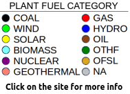

{% extends "LAYOUT.html" %}
{% block title %}INGRID - Map Search{% endblock %}
{% block head %}
    {{ super() }}

    <style>
      #Map {
        height: 60vh;
        margin: 0;
        padding: 0;
        position: relative;
      }

      #legende{
        position: absolute;
        z-index: 100000;
        right: 50px;
        bottom: 50px;
      }
    </style>

{% endblock %}

{% block content %}

<div id="Map">
    <div id="legende">
        <div class="udiv_legende" id="legende_1">
            
            <p><a class="btn btn-sm btn-primary pull-right" href="adv_search#" role="button">back to search &raquo;</a></p>
        </div>
     </div>
</div>

<script>
  var mapConfig = {
    "clon": {{clon}},
    "clat": {{clat}},
    "plants": {{plants|safe}},
    "minLng": {{minLng}},
    "minLat": {{minLat}},
    "maxLng": {{maxLng}},
    "maxLat": {{maxLat}}
  };
</script>
<script src="https://ajax.googleapis.com/ajax/libs/jquery/3.1.1/jquery.min.js"></script>
<script src="../static/js/OpenLayers.js"></script>
<script src="../static/js/map.js"></script>

{% endblock %}
